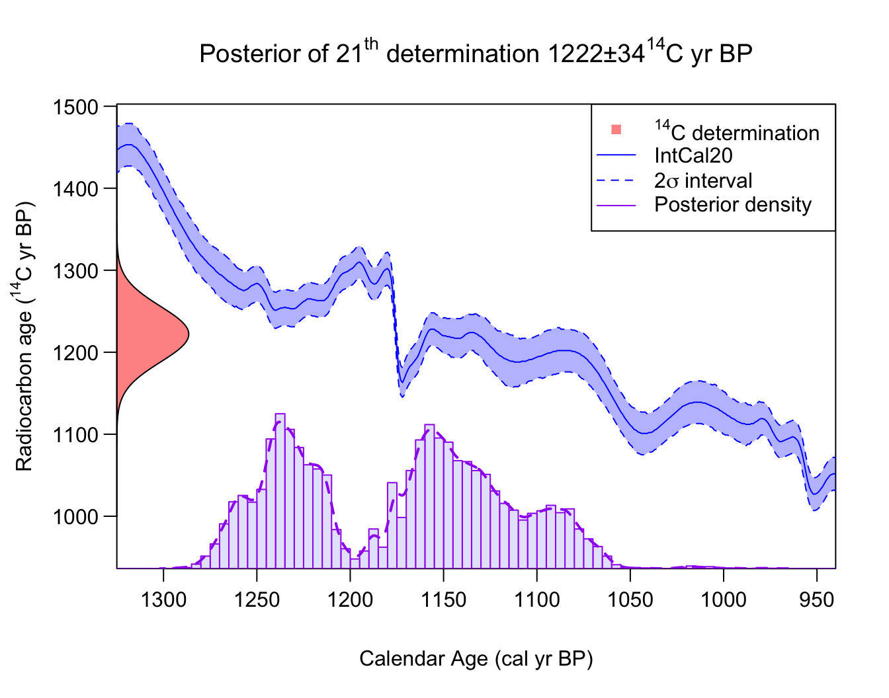
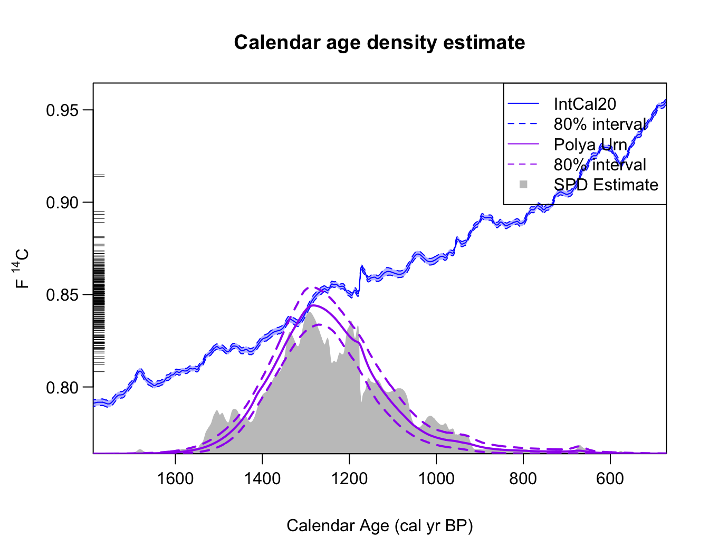
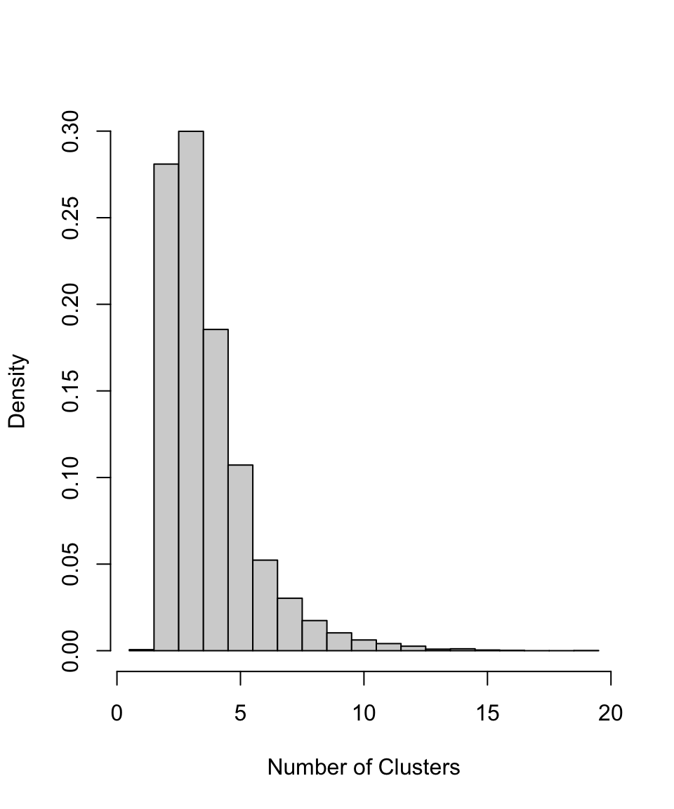

Non-parametric Summed Density
Source:vignettes/Non-parametric-summed-density.Rmd
Non-parametric-summed-density.RmdNon-parametric calibration of multiple related 14C samples
Model details
We model the underlying shared calendar age density \(f(\theta)\) as an infinite and unknown mixture of individual calendar age clusters/phases: \[ f(\theta) = w_1 \textrm{Cluster}_1 + w_2 \textrm{Cluster}_2 + w_3 \textrm{Cluster}_3 + \ldots \] Each calendar age cluster in the mixture has a normal distribution with a different location and spread (i.e., an unknown mean \(\mu_j\) and precision \(\tau_j^2\)). Each object is then considered to have been drawn from one of the (infinite) clusters that together constitute the overall \(f(\theta)\).
Such a model allows considerable flexibility in the estimation of the joint calendar age density \(f(\theta)\) — not only allowing us to build simple mixtures but also approximate more complex distributions (see illustration below). In some cases, this mix of normal densities may represent true and distinct underlying normal archaeological phases, in which case additional practical inference may be possible. However this is not required for the method to provide good estimation of a wide range of underlying \(f(\theta)\) distributions.
The probability that a particular sample is drawn from a particular cluster will depend upon the relative weight \(w_j\) given to that specific cluster. It will be more likely that an object will come from some clusters than others. Given an object belongs to a particular cluster, its prior calendar age will then be normally distributed with the mean \(\mu_j\) and precision \(\tau_j^2\) of that cluster.

An illustration of building up a potentially complex distribution \(f(\theta)\) using mixtures of normals. Left Panel: A simple mixture of three (predominantly disjoint) normal clusters (blue dashed lines) results in an overall \(f(\theta)\) that is tri-modal (solid red). Right Panel: Overlapping normal clusters (blue dashed lines) can however create more complex \(f(\theta)\) distributions (solid red).
Estimation of the shared underlying density
To estimate the shared calendar age density \(f(\theta)\) based upon our set of 14C observations, \(X_1, \ldots, X_N\), we need to estimate:
- the mean \(\mu_j\) and precision \(\tau_j^2\) of each individual normal cluster within the overall mixture \(f(\theta)\),
- the weighting \(w_j\) associated to that cluster
This requires us to also calibrate the 14C determinations to obtain their calendar ages \(\theta_1, \ldots, \theta_N\). Since we assume that the calendar ages of each object arise from the shared density, this must be performed simultaneously to the estimation of \(f(\theta)\).
We use Markov Chain Monte Carlo (MCMC) to iterate, for \(k = 1, \ldots, M\), between:
- Calibrate \(X_1, \ldots, X_n\) to obtain calendar age estimates \(\theta_1^{k+1}, \ldots \theta_N^{k+1}\) given current shared estimate that each \(\theta_i \sim \hat{f}^k(\theta)\)
- Update estimate of shared calendar age density (to obtain \(\hat{f}_{k+1}(\theta)\) given current set of calendar ages \(\theta_1^{k+1}, \ldots \theta_N^{k+1}\)
After running the sampler for a large number of iterations (until we are sufficiently confident that the MCMC has converged) we obtain estimates for the calendar age \(\theta_i\) of each sample, and an estimate for the shared calendar age density \(\hat{f}(\theta)\) from which they arose. These latter estimates of the shared calendar age density are called predictive estimates, i.e., they provide estimates of the calendar age of a hypothetical new sample (based on the set of \(N\) samples that we have observed).
Critically, with our Bayesian non-parametric method, the number of calendar age clusters that are represented in the observed data is unknown (and is allowed to vary in each MCMC step). This flexibility is different, and offers a substantial advantage, from other methods that require the number of clusters to be known a priori. For full technical details of the models used, and explanation of the model parameters, see Heaton (2022).
Running the sampler
The MCMC updating is performed within an overall Gibbs MCMC scheme. There are two different schemes provided to update the DPMM — a Polya Urn approach (Neal 2000) which integrates out the mixing weights of each cluster; and a slice sampling approach in which they are explicitly retained (Walker 2007).
Run using the Polya Urn method (our recommended approach based upon testing):
polya_urn_output <- PolyaUrnBivarDirichlet(
rc_determinations = kerr$c14_age,
rc_sigmas = kerr$c14_sig,
calibration_curve = intcal20,
n_iter = 1e4,
n_thin = 5)or the Walker method as follows:
walker_output <- WalkerBivarDirichlet(
rc_determinations = kerr$c14_age,
rc_sigmas = kerr$c14_sig,
calibration_curve = intcal20,
n_iter = 1e4,
n_thin = 5)Note: This example only runs for 10,000 iterations - this is to keep the run time short, but is not enough to lead to a converged result. We suggest running for at least 100,000 iterations to arrive at the converged results, which are shown in Heaton (2022). More detail on assessing convergence of the MCMC can be found in the determining convergence vignette
Both of these methods will output a list containing the sampler outputs at every \(n_{\textrm{thin}}\) iteration, with the values of the model parameters and the calendar ages.
Post-processing
Our sampler provides three outputs of particular interest.
Calendar Ages
As described above, the output data includes the calendar age
estimate for each 14C sample. We can use this to determine
the posterior distribution of the calendar age for each sample. Note
that the calendar age estimates use the joint information provided by
all the 14C determinations (as opposed to solely the
14C determination of the single object that would be found
using CalibrateSingleDetermination) on the understanding
the calendar ages of the objects are related.
You can calculate and plot this using
PlotCalendarAgeDensityIndividualSample - for example to
calculate the posterior calendar age distribution for the 21st
14C determination:
PlotCalendarAgeDensityIndividualSample(21, polya_urn_output)
The highest posterior density range for a given probability and the
unmodelled density (i.e. the result of
CalibrateSingleDetermination) can also be shown on the plot
by specifying this in the arguments, as shown below.
PlotCalendarAgeDensityIndividualSample(
21, polya_urn_output, show_hpd_ranges = TRUE, show_unmodelled_density = TRUE)Density Estimate to Summarise Objects
The output data contains information to allow calculation of the
predictive distribution for the calendar age of a new, as yet
undiscovered, object. This density estimate summarises the calendar ages
of all objects. It is generated using the posterior sampled values of
the DPMM component of our MCMC sampler. This calendar age density can be
calculated and plotted using
PlotPredictiveCalendarAgeDensity. The pointwise mean of
\(\hat{f}(\theta)\) will be plotted,
together with a corresponding interval at (a user-specified) probability
level.
The function allows calculation using multiple outputs so that their results can be compared. For example below we compare the results from the two sampler methods above.
densities <- PlotPredictiveCalendarAgeDensity(
output_data = list(walker_output, polya_urn_output),
n_posterior_samples = 500,
denscale = 2.5)
We also have the option to plot the SPD, to plot in the F14C scale, and to change the confidence intervals on the plot.
densities <- PlotPredictiveCalendarAgeDensity(
output_data = polya_urn_output,
n_posterior_samples = 500,
denscale = 2.5,
show_SPD = TRUE,
interval_width = "bespoke",
bespoke_probability = 0.8,
plot_14C_age = FALSE)
Note: Around 1176 cal yr BP, when there appears to be a potential spike in the summarised estimate of the joint \(f(\theta)\), we see that the 80% probability interval (dashed line) does not include the mean (solid line). This is not an error, but rather highlights a benefit of the DPMM method whereby the number of clusters needed to represent the data is allowed to vary. This feature occurs because the method is unsure if the observed data support an additional (highly-concentrated) cluster located around this period. In some iterations of the MCMC, such a cluster will be included; but for the majority of iterations, the method believes it is not required. In theory, one could look at the individual MCMC iterations to obtain an estimate of how likely such a highly-concentrated cluster (that results in a sudden spike in samples) is. Since the plotted 80% interval does not contain the mean, it is likely that the method thinks there is a less than 10% chance of such a distinct and highly-concentrated cluster (as fewer than 10% of the MCMC iterations contain one).
Aside: The sharp jump in the IntCal20 calibration curve at 1176 cal yr BP (774 cal AD) is due to an extreme solar particle event (ESPE) also known as a Miyake Event (Miyake et al. 2012).
Number of Clusters
The output data also contains information about the cluster allocation of each sampled object, which we can use to build the probability for there being a given number of total clusters. If we believe the underlying individual clusters in the model have inherent meaning in terms of representing genuine and distinct periods of site usage, as opposed to simply providing a tool to enable a non-parametric density estimate, this information may be archaeologically useful.
PlotNumberOfClusters(output_data = polya_urn_output)
When not to use this Bayesian non-parametric method
The current implementation of our Bayesian non-parametric approach only supports normally-distributed clusters as the components in the overall calendar age mixture distribution \(f(\theta)\). While this still allows a great deal of flexibility in the modelling, as many distributions can be well approximated by normals, there are certain distributions \(f(\theta)\) for which they will struggle. In particular, you cannot approximate a uniform phase well with a mixture of normal distributions.
If the underlying shared calendar age density \(f(\theta)\) is close to a uniform phase, or
a mixture of uniform phases, then the current (normally-distributed
cluster component) Bayesian non-parametric method is unlikely to work
optimally and provide reliable summaries. In such cases, we advise use
of PPcalibrate(). This alternative approach is ideally
suited to such situations.
The inhomogeneous Poisson process/changepoint approach taken by
PPcalibrate() implicitly assumes a shared underlying
calendar age model for \(f(\theta)\)
that consists precisely of an unknown mixture of uniform phases.
Implementing PPcalibrate() and plotting the posterior rate
of the Poisson process (see
vignette) will provide an estimate of that shared calendar age
density.